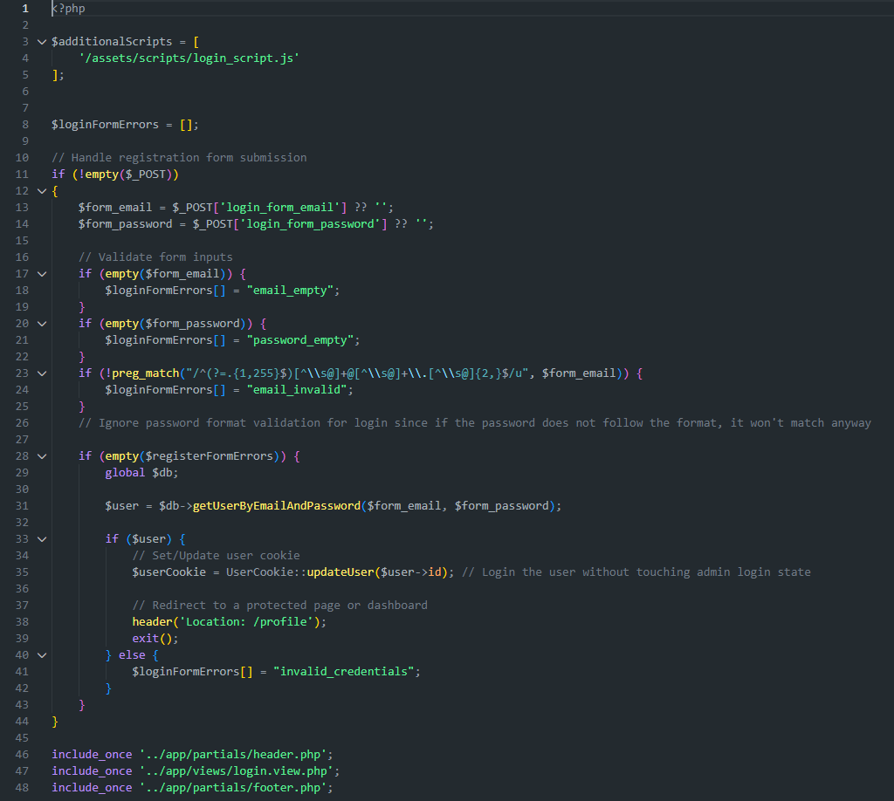

Construisons quelque chose ensemble
Chaque projet est unique:
Je développe des solutions sur-mesure
adaptées à vos enjeux réels.
Qui suis-je ?
Développeur passionné, je conçois des applications et expériences numériques pensées pour être utiles, performantes et durables.
J’accorde autant d’importance à la compréhension du besoin qu’à la qualité du développement.
Je m’efforce de créer des solutions qui allient esthétique, performance et accessibilité.
Ce que je fais
Applications sur mesure
Conception et développement de solutions adaptées à votre contexte et besoins spécifiques, en utilisant les technologies les plus récentes pour garantir performance et évolutivité.
Optimisation des performances
Amélioration de la vitesse et de l'efficacité de vos applications web grâce à des techniques avancées de l'optimisation du code, de la gestion des ressources et du chargement des pages.
Expériences interactives
Création d'interfaces utilisateur engageantes et intuitives, mettant l'accent sur l'accessibilité et la convivialité.
Conseil et accompagnement
Assistance dans la définition de votre stratégie numérique, choix technologiques et meilleures pratiques de développement pour assurer le succès de vos projets.
Comment je travaille
Comprendre avant de créer
J'écoute attentivement vos besoins et objectifs pour concevoir des solutions qui répondent réellement à vos attentes.
Concevoir des solutions
Je propose une approche claire et structurée, en utilisant les meilleures pratiques de développement pour garantir la qualité et la maintenabilité du code.
Accompagner et soutenir
Je vous accompagne tout au long du projet, assurant une communication transparente et un support continu pour garantir le succès de la solution développée.
Pourquoi travailler avec moi ?
🎯 Une approche centrée sur vos besoins
💬 Une communication claire et transparente
⭐ Un souci constant de la qualité et de la fiabilité
💡 Une vision orientée solution, pas seulement technique
...